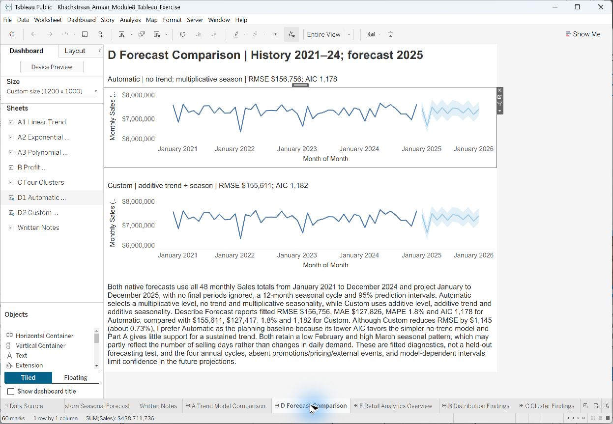

Selected work
Retail performance in Tableau
Central leads sales; the regional gap is only 1.4%.
Synthetic retail coursework. Two workbooks connect KPIs, dashboard actions, trends, and forecasts.
Approach
- Built an analytical overview, interactive insights and a KPI scorecard for sales, profit and order volume.
- Connected regional and category views with filters, dashboard actions and a selected-region sales target.
- Compared linear, exponential and polynomial trends, profit distributions and a four-cluster solution.
- Placed automatic and custom seasonal forecasts side by side to examine their assumptions.
A closer look at the analysis.
Original dashboard captures show the work at a readable scale.


What I learned
A useful dashboard supports a sequence of questions: what changed, where the change occurred and which assumptions need testing before a decision.
Limits
The supplied retail data are synthetic course exercises. Trend fits and clusters are exploratory. No future-period forecast accuracy or realized sales improvement is claimed. The screenshots document the saved views; the published workbooks can be explored on Tableau Public. The packaged downloads include embedded extracts; refreshing from the original course CSV files requires those source files.
Next step
Test forecast choices on a later time period and compare forecast errors before using the projections to guide a decision.
Explore the original workbooks.
Embedded course data extracts were verified in Tableau Public 2026.2. The packaged workbook files from the original site are no longer available for download, the workbook views above show the saved dashboards.
-
Retail performance, Module 7
Three dashboards and a four-point story covering the analytical overview, interactive insights and KPI scorecard.
-
Retail analytics, Module 8
Five dashboards exploring trends, profit distributions, clusters and seasonal forecast comparisons.